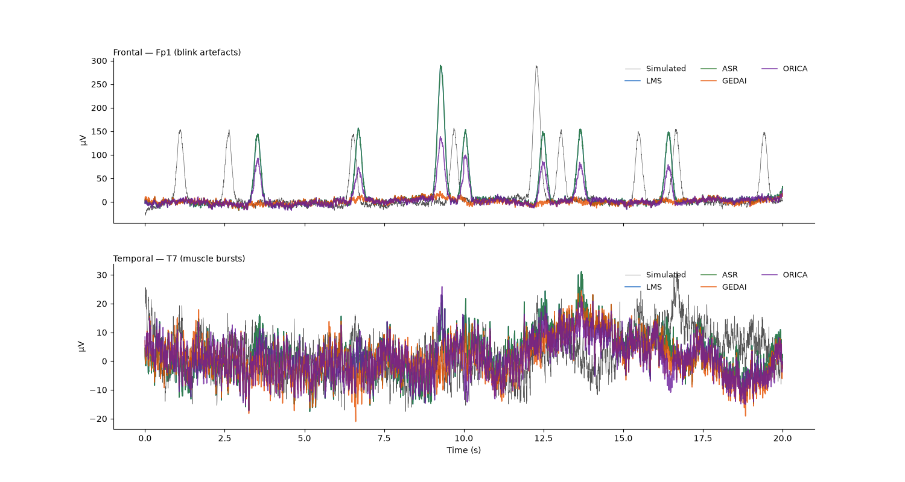
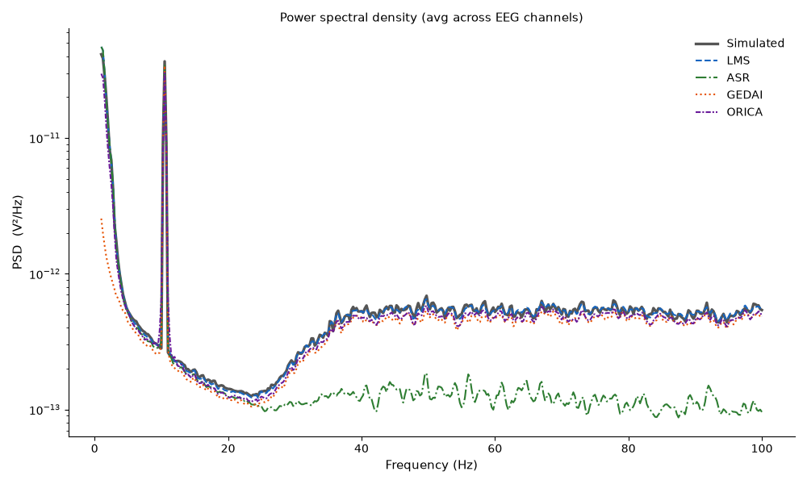

Note
Go to the end to download the full example code.
Real-time artifact correction comparison#
This example generates a realistic EEG recording with
simulate_nf_session(), injects it into a local LSL stream
with PlayerLSL, and compares four artifact handling
approaches applied in real time as data arrives window-by-window:
AdaptiveLMSFilter— reference-based adaptive filter.ASRDenoiser— baseline-calibrated subspace rejection.GEDAIDenoiser— band-selective eigendecomposition.ORICA— online independent component analysis.
simulate_nf_session() produces 64-channel biosemi64 EEG
with realistic 1/f background, alpha oscillations, eye blinks, muscle bursts,
slow drift, and an NF-state marker — no MRI data required.
Generate simulated NF session data#
simulate_nf_session() returns a RawArray
and a boolean NF-state mask. We use it as our ground truth and stream it
via PlayerLSL.
import os
import tempfile
import time
import numpy as np
import matplotlib.pyplot as plt
import mne
from scipy.signal import welch
from mne_rt.tools import (
simulate_nf_session,
AdaptiveLMSFilter, ASRDenoiser, GEDAIDenoiser, ORICA,
)
from mne_lsl.player import PlayerLSL
from mne_lsl.stream import StreamLSL
mne.set_log_level("WARNING")
DURATION = 60.0 # seconds
SFREQ = 256.0
N_CAL = int(5 * SFREQ) # first 5 s: clean calibration window
raw_sim, nf_state = simulate_nf_session(
duration=DURATION,
sfreq=SFREQ,
n_channels=64,
n_blinks=20,
alpha_amplitude=15e-6,
background_amplitude=5e-6,
muscle_rate=0.06,
alpha_reactivity=True,
rng_seed=42,
verbose=False,
)
info = raw_sim.info
EEG_NAMES = raw_sim.ch_names
N_EEG = len(EEG_NAMES)
t = raw_sim.times
print(f"Simulated EEG: {N_EEG} channels | {DURATION:.0f} s | {SFREQ:.0f} Hz")
print(f"NF state active: {nf_state.mean()*100:.0f} % of samples")
Simulated EEG: 64 channels | 60 s | 256 Hz
NF state active: 50 % of samples
Fit calibration-dependent denoisers#
ASR and GEDAI require a short clean calibration segment before the live session. We use the first 5 s of the simulation (before any blinks or muscle bursts are injected at full rate).
data_sim = raw_sim.get_data()
# Build a synthetic EOG reference from frontal channels (Fp1/Fp2)
fp1_idx = EEG_NAMES.index("Fp1") if "Fp1" in EEG_NAMES else 0
fp2_idx = EEG_NAMES.index("Fp2") if "Fp2" in EEG_NAMES else 1
eog_ref = 0.5 * (data_sim[fp1_idx] + data_sim[fp2_idx])
# Extend data matrix with EOG reference row so LMS has a reference channel
data_with_ref = np.vstack([data_sim, eog_ref[np.newaxis]])
N_WITH_REF = data_with_ref.shape[0]
cal_data = data_sim[:, :N_CAL]
chunk_size = int(SFREQ)
asr = ASRDenoiser(cutoff=5.0)
asr.fit(cal_data, sfreq=SFREQ, window_len=1.0)
gedai = GEDAIDenoiser(n_channels=N_EEG)
gedai.fit_from_raw(cal_data, sfreq=SFREQ, band=(8.0, 30.0))
n_noise = max(2, int(0.20 * N_EEG))
art_idx_g = gedai.find_noise_components(n_noise=n_noise)
print(f"ASR fitted | GEDAI fitted ({len(art_idx_g)} artifact components)")
ASR fitted | GEDAI fitted (12 artifact components)
Stream via PlayerLSL and apply corrections in real time#
We save the simulation to a FIF file, start a PlayerLSL, connect with StreamLSL, and process every 1-second chunk through each corrector.
STREAM_NAME = "ANT_ArtComp_demo"
SOURCE_ID = STREAM_NAME
with tempfile.NamedTemporaryFile(suffix="_raw.fif", delete=False) as _f:
_tmp_path = _f.name
raw_sim.save(_tmp_path, overwrite=True, verbose=False)
player = PlayerLSL(_tmp_path, chunk_size=chunk_size, name=STREAM_NAME,
source_id=SOURCE_ID, n_repeat=1)
player.start()
time.sleep(2.0)
stream = StreamLSL(bufsize=4.0, source_id=SOURCE_ID)
stream.connect(acquisition_delay=0.005, timeout=15.0)
print(f"Streaming: {STREAM_NAME} | sfreq={stream.info['sfreq']:.0f} Hz | "
f"n_ch={stream.info['nchan']}")
lms = AdaptiveLMSFilter(ref_ch_idx=N_EEG, n_taps=8, mu=0.005)
orica = ORICA(n_channels=N_EEG, learning_rate=0.005, block_size=chunk_size)
data_lms = np.zeros_like(data_sim)
data_asr = np.zeros_like(data_sim)
data_gedai = np.zeros_like(data_sim)
data_orica = np.zeros_like(data_sim)
n_chunks = int(DURATION) // 1
t_deadline = time.perf_counter() + DURATION + 15.0
k = 0
while k < n_chunks and time.perf_counter() < t_deadline:
if stream.n_new_samples < chunk_size:
time.sleep(0.005)
continue
chunk, _ = stream.get_data(winsize=1.0) # (n_ch, chunk_size)
sl = slice(k * chunk_size, (k + 1) * chunk_size)
# Extend chunk with EOG ref for LMS
eog_chunk = 0.5 * (chunk[fp1_idx] + chunk[fp2_idx])
chunk_with_ref = np.vstack([chunk, eog_chunk[np.newaxis]])
# LMS
lms_out = lms.transform(chunk_with_ref)
data_lms[:, sl] = lms_out[:N_EEG]
# ASR
data_asr[:, sl] = asr.transform(chunk)
# GEDAI
data_gedai[:, sl] = gedai.denoise(chunk, art_idx_g)
# ORICA — update online
src = orica.transform(chunk)
# Re-project with estimated artifact components zeroed (use blink correlation)
corr_eog = np.array([abs(np.corrcoef(src[i], eog_chunk)[0, 1]) for i in range(N_EEG)])
n_art = max(1, int(0.10 * N_EEG))
art_comps = list(np.argsort(corr_eog)[::-1][:n_art])
data_orica[:, sl] = orica.denoise(chunk, art_comps)
k += 1
stream.disconnect()
try:
player.stop()
except RuntimeError:
pass
os.unlink(_tmp_path)
print(f"Processed {k} windows via LSL streaming")
Streaming: ANT_ArtComp_demo | sfreq=256 Hz | n_ch=64
/opt/hostedtoolcache/Python/3.11.16/x64/lib/python3.11/concurrent/futures/thread.py:58: RuntimeWarning: ANT_ArtComp_demo: End of file reached with an empty chunk. This should not happen with a chunk_size different from 1.
result = self.fn(*self.args, **self.kwargs)
Processed 57 windows via LSL streaming
Figure 1 — Time-series comparison#
COLORS = {
"Simulated": "#555555", "LMS": "#1565C0",
"ASR": "#2E7D32", "GEDAI": "#E65100", "ORICA": "#6A1B9A",
}
t20 = t[t <= 20.0]
s20 = slice(0, len(t20))
frontal_ch = "Fp1" if "Fp1" in EEG_NAMES else EEG_NAMES[0]
temporal_ch = "T7" if "T7" in EEG_NAMES else EEG_NAMES[1]
ch_rows = [
(EEG_NAMES.index(frontal_ch), f"Frontal — {frontal_ch} (blink artefacts)"),
(EEG_NAMES.index(temporal_ch), f"Temporal — {temporal_ch} (muscle bursts)"),
]
fig1, axes = plt.subplots(2, 1, figsize=(15, 8), sharex=True,
gridspec_kw={"hspace": 0.25})
for ax, (ch, title) in zip(axes, ch_rows):
ax.plot(t20, data_sim[ch, s20] * 1e6,
color=COLORS["Simulated"], lw=0.5, label="Simulated")
for mname, mdata in [("LMS", data_lms), ("ASR", data_asr),
("GEDAI", data_gedai), ("ORICA", data_orica)]:
ax.plot(t20, mdata[ch, s20] * 1e6, color=COLORS[mname],
lw=1.2, alpha=0.8, label=mname)
ax.set_ylabel("µV", fontsize=10)
ax.set_title(title, fontsize=10, loc="left", pad=3)
ax.legend(fontsize=9, frameon=False, loc="upper right", ncol=3)
ax.spines[["top", "right"]].set_visible(False)
axes[-1].set_xlabel("Time (s)", fontsize=10)
fig1.tight_layout()

/home/runner/work/mne-rt/mne-rt/examples/ex_artifact_comparison.py:211: UserWarning: This figure includes Axes that are not compatible with tight_layout, so results might be incorrect.
fig1.tight_layout()
Figure 2 — PSD comparison#
fig2, ax_psd = plt.subplots(1, 1, figsize=(10, 6))
psd_kw = dict(fs=SFREQ, nperseg=int(4 * SFREQ), noverlap=int(2 * SFREQ))
psd_sets = [
("Simulated", data_sim, COLORS["Simulated"], dict(lw=2.4, ls="-")),
("LMS", data_lms, COLORS["LMS"], dict(lw=1.5, ls="--")),
("ASR", data_asr, COLORS["ASR"], dict(lw=1.5, ls="-.")),
("GEDAI", data_gedai, COLORS["GEDAI"], dict(lw=1.5, ls=":")),
("ORICA", data_orica, COLORS["ORICA"], dict(lw=1.5, ls=(0, (3, 1, 1, 1)))),
]
for label, dat, col, kw in psd_sets:
psds = [welch(dat[i], **psd_kw)[1] for i in range(dat.shape[0])]
f_arr = welch(dat[0], **psd_kw)[0]
mask = (f_arr >= 1.0) & (f_arr <= 100.0)
ax_psd.semilogy(f_arr[mask], np.mean(psds, axis=0)[mask], color=col, label=label, **kw)
ax_psd.set_xlabel("Frequency (Hz)", fontsize=11)
ax_psd.set_ylabel("PSD (V²/Hz)", fontsize=11)
ax_psd.set_title("Power spectral density (avg across EEG channels)", fontsize=11)
ax_psd.legend(fontsize=10, frameon=False)
ax_psd.spines[["top", "right"]].set_visible(False)
fig2.tight_layout()

Total running time of the script: (1 minutes 19.754 seconds)